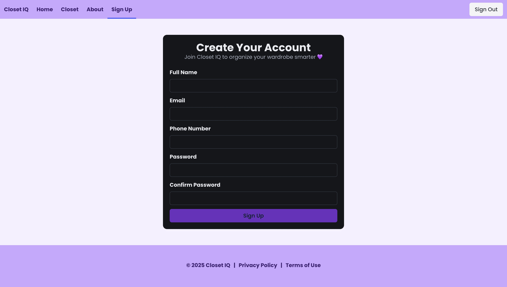

Education
I am pursuing a Bachelor of Business Administration in Information Systems at the University of Wisconsin–Madison School of Business. My education has built my foundation in business, technology, and information systems.
Information Systems student passionate about HR technology, Talent Systems, and improving the employee experience.
Get StartedI am pursuing a Bachelor of Business Administration in Information Systems at the University of Wisconsin–Madison School of Business. My education has built my foundation in business, technology, and information systems.
I have gained experience in Talent Systems, HR technology, business analysis, and project management, applying classroom learning to real-world challenges.
My skills include business analysis, project management, data analysis, Workday, and HR technology. I enjoy learning new technologies and improving processes.
My academic and professional projects let me analyze business needs and develop technology solutions to real-world problems.

My experience includes roles in Talent Operations, Talent Systems, and IT project management. These roles strengthened my communication, analytical, problem-solving, and project management skills.
I am interested in HR technology, HRIS, Talent Systems, and business analysis—especially how technology can improve processes and the employee experience.
Interested in learning more about my experience? Connect with me on LinkedIn or reach out to learn more about my work.
Connect with me on LinkedIn